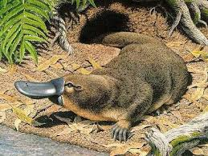

es una especie de mamífero semiacuático endémico del este de Australia y de la isla de Tasmania. Es una de las cinco especies, junto con las cuatro de equidna, que perviven en la actualidad del orden de los monotremas, grupo que reúne a los únicos mamíferos actuales que ponen huevos en lugar de dar a luz crías vivas.
Número de huevos: 1 – 3 Nombre científico: Ornithorhynchus anatinus Promedio de vida: 17 años (En cautiverio) Masa Corporal: 1 – 2,4 kg (Macho), 0,7 – 1,6 kg (Hembra) Longitud: 50 cm (Macho), 43 cm (Hembra)
